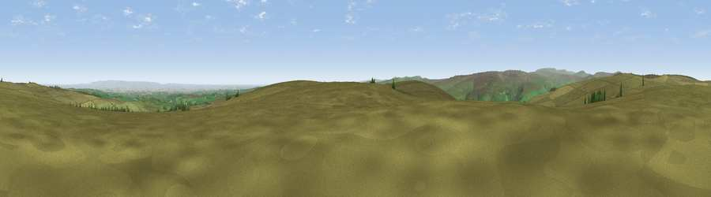

Viewpoint near Wath
#10960 in England · top 16% of its area beats it · near WathWhere it is
The exact computed spot (SE 15525 71725). Click the marker for map links.
The view, rendered

A 360° render of this exact spot computed from the terrain model, tree cover and land cover — summer colours, afternoon light, calibrated against photographs of famous viewpoints. Real trees, hedges and buildings will differ in detail.
The panorama
Grey silhouette: terrain skyline in each direction (720 bearings, Earth curvature and refraction included). Dashed green: skyline with trees (+15 m) and buildings (+8 m) as obstacles. Blue strip: how far the ground is visible on each bearing.
Where the view opens
Wedge length = distance to the farthest visible ground on that bearing (vegetation-aware). Rings at 10, 25 and 50 km.
What fills the view
90% grassland · 5% cropland · 4% woodland
Angular shares of the visible panorama (visual magnitude), not map area. Landscape diversity 0.18 (0–1 Shannon).
Key numbers
More beautiful places nearby
The staircase of upgrades: each row has a higher view potential than everything closer. Driving times are estimates from straight-line distance, calibrated against real road routing — check an actual route before setting out.
| Place | Direction | Drive | Score |
|---|---|---|---|
| Viewpoint near Wath | SSE · 1 km | ~2 min | 62.7 |
| Viewpoint near Lofthouse | NNW · 3 km | ~7 min | 65.1 |
| Viewpoint near Lofthouse | NNW · 4 km | ~8 min | 65.8 |
| Viewpoint near Lofthouse | NW · 6 km | ~13 min | 66.1 |
| Throstle Hill | NW · 7 km | ~15 min | 67.2 |
| Viewpoint near Swinton | NE · 8 km | ~15 min | 68.4 |
| Viewpoint near Bewerley | SSW · 8 km | ~16 min | 76.8 |
| Viewpoint near East Witton | N · 13 km | ~24 min | 77.8 |
54.14113, -1.76385 · source: screening · position refined by local search. Computed location — check access rights before visiting.